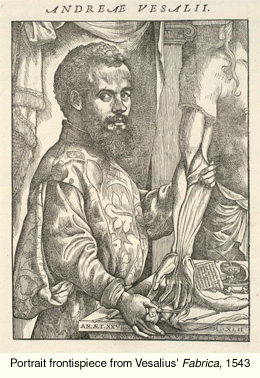
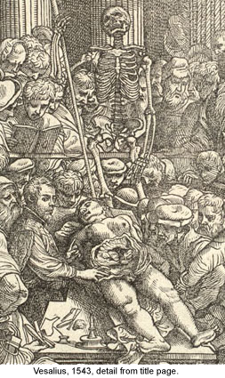

Andreas Vesalius (1514-1564)

Vesalius was a native of Wesel in the Rhineland. He began his medical
studies in 1533 in Paris, and completed his education at Louvain and Padua.
In 1537 he was appointed lecturer in surgery and anatomy at Padua.
It was at Padua that he developed his study
of anatomy, the fruits of which were published most completely in De humani corporis fabrica (known as the Fabrica )
of 1543, in which he provided a fuller description of the human body than had ever
been achieved before (O'Malley, p.112; Nutton, 'The Man'). In the process he was able to show that
the ancient Graeco-Roman medical writer Galen (131-201 CE), who was still relied on as the principal authority
on the subject, had in fact made many errors; in particular he reminded his readers that Galen had
derived a large part of his anatomy from the study of animals, especially monkeys.

One of the keys to Vesalius' success was the fact that he combined
an extraordinary knowledge of medicine with remarkable practical skill in
dissecting bodies. His book combined very detailed written exposition with an
elaborate apparatus of illustrations; his descriptions were thus supported by
visual demonstration in a manner that was brilliantly effective in conveying his
observations.
The book was an ideal alternative to his teaching: his method
of teaching is represented graphically on the titlepage of the book itself,
where we see him lecturing while demonstrating a dissection.
Earlier, it had been usual for the teacher to lecture and, if there was any
dissection at all, for it to be conducted by another (Vesalius himself commented on
the difference in his dedication of the book to the Emperor Charles V). Vesalius's
concern with clarity of exposition is further shown by the presence of a skeleton,
which enabled him easily to indicate the location of the point he was demonstrating
during a dissection (O'Malley, 1964, p.143).
© 2004 Edinburgh University Library / Royal College of Physicians of Edinburgh
www.lib.ed.ac.uk
25 August 2004
|